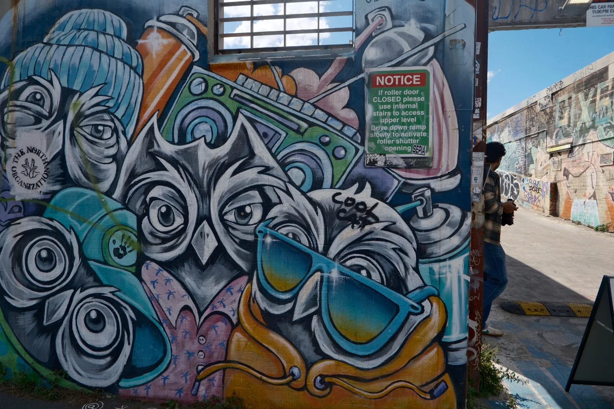
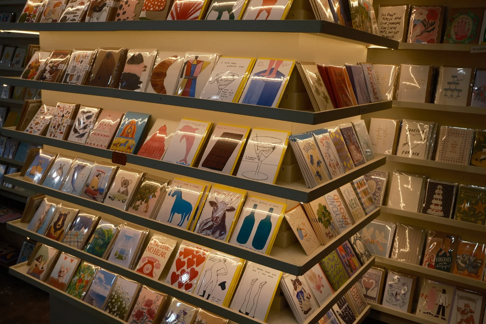
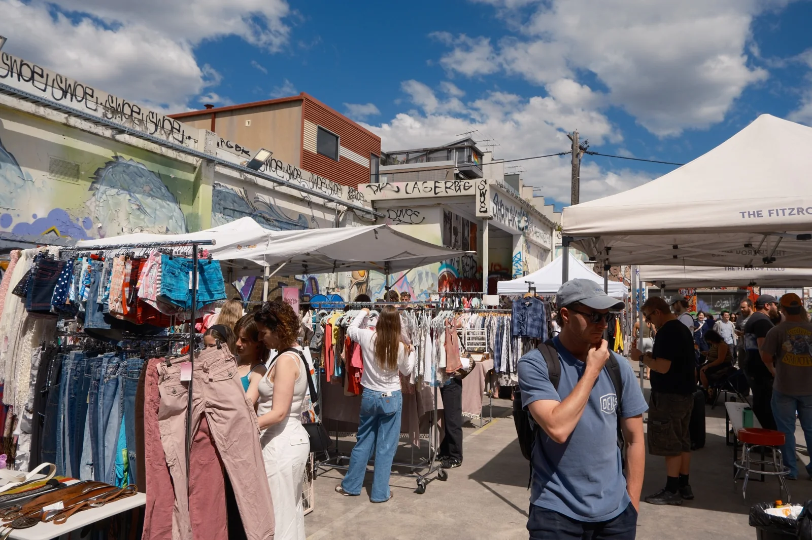
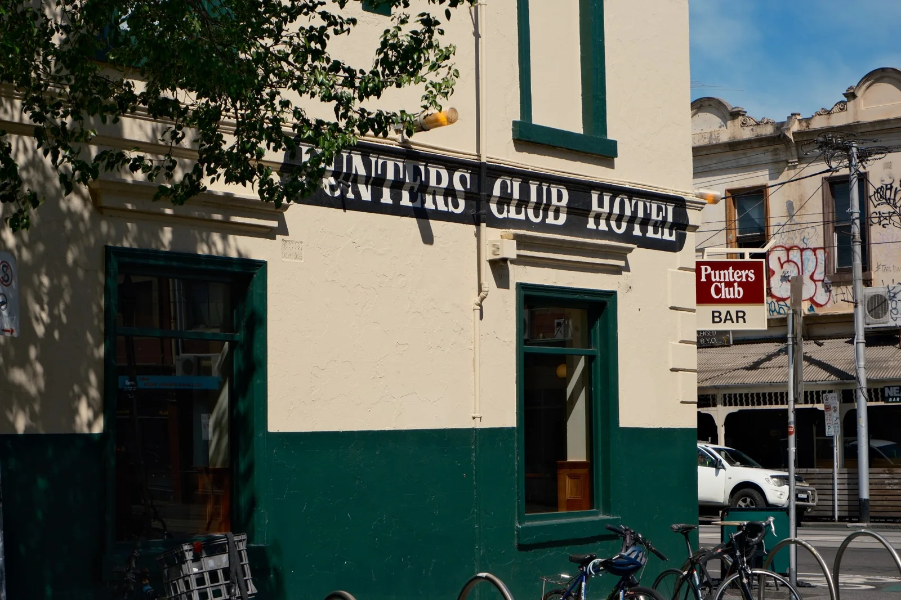
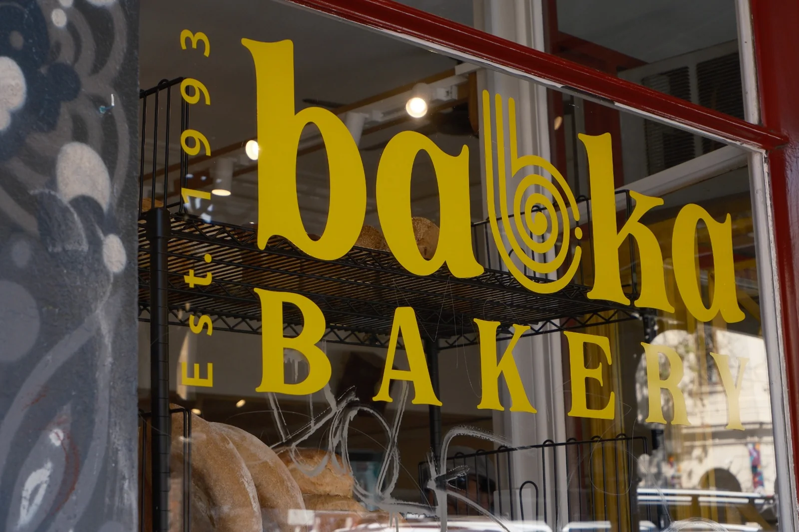
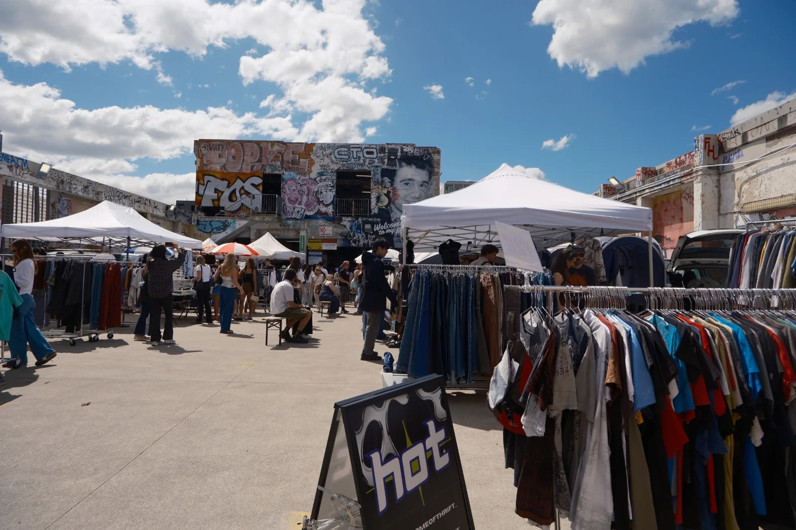
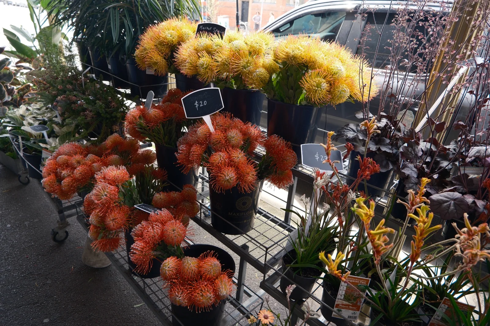
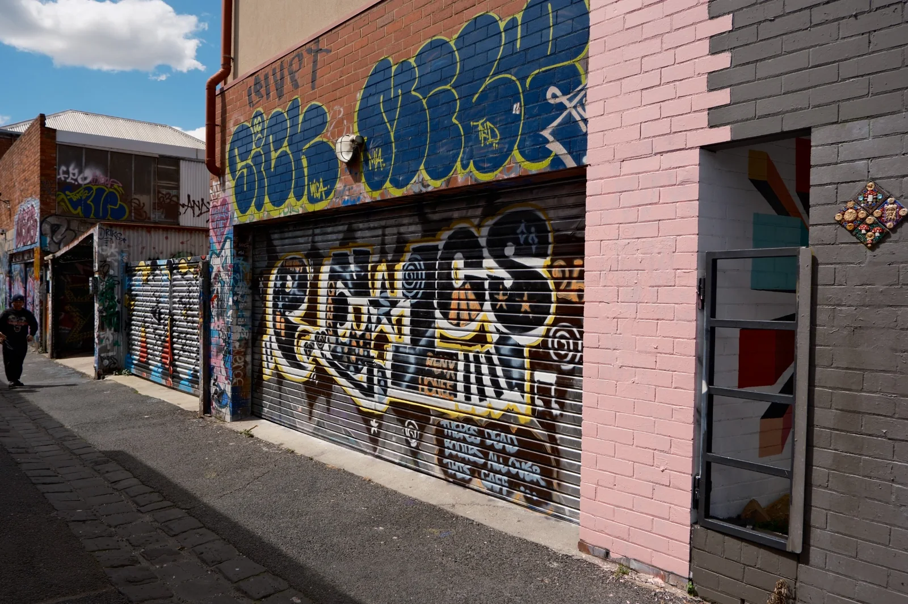

Set the mood.
Choose how you feel, what you’re into, the weather and how much time you have.
A different mood. A different route.
A little more Fitzroy.
A neighbourhood with its own rhythm.
Why Fitzroy?
Because every street has a story — and a rhythm of its own.
Fitzroy stands on Wurundjeri Woi Wurrung Country. Its story begins long before the suburb’s streets were laid out, with a continuing Aboriginal connection to this place.
Known as Melbourne’s first suburb, Fitzroy’s early development dates to 1839. Terrace houses, workshops and factories became part of its streetscape, while working-class communities and later generations of migrants helped shape its identity. After the Second World War, Italian and Greek communities were an important part of local life.
Today, the neighbourhood brings together independent shops, galleries, street art, cafés and live music. A walk along Brunswick, Gertrude, Smith and Johnston Streets can move from records and vintage finds to a coffee stop or a colourful laneway.
We chose Fitzroy because this mix makes room for different kinds of solo days. Whether you want to browse, take photos, find music or simply wander, our campaign offers a starting point that matches your mood and helps you notice more along the way.




Exploring somewhere on your own can be freeing. Deciding where to start can be the tricky part.
We created Soundtrack Your Fitzroy to make that first step easier. Instead of another long list of places, we bring together your mood, your interests and your time — with a route and music to help you find your flow.
Our aim is simple: help solo visitors feel more confident getting out, looking around and connecting with Fitzroy at their own pace.
Here’s how it worksA little inspiration for your next solo wander.
You choose the feeling. We help with the starting point.
Choose how you feel, what you’re into, the weather and how much time you have.
Get a personalised Fitzroy route and a matching playlist, with Google Maps and Spotify links.
Put on your headphones, follow your curiosity and take the walk at your own pace.



